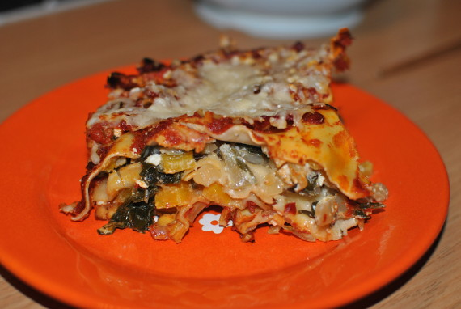

Mangold-Lasagne

- Zubereitung: ca. 40 Minuten
- Backen: ca. 40 Minuten
- Für 4 Portionen
Zutaten
- 1 mittelgroßer Kopf Mangold
- 12 Lasagneplatten (vorgekocht)
- 3 Knoblauchzehen
- 1 gelbe Paprikaschote
- 200 g Schafskäse
- 1 EL Pinienkerne
- 500 ml Tomaten, passiert
- 2 EL Tomatenmark
- 8 EL Olivenöl
- 1 TL Thymian, getrocknet
- 50 g Parmesan, gerieben
- Salz
- Zucker
- Pfeffer
- Muskat
Zubereitung
- Für die Tomatensoße 3 EL Olivenöl in einem Topf erhitzen, das Tomatenmark darin anbraten und circa
die Hälfte der Knoblauchwürfel dazugeben. Diese kurz mitbraten und mit den passierten Tomaten aufgießen.
Die Hitze auf kleinste Stufe zurückdrehen und die Soße mindestens 20 Minuten köcheln lassen.
Mit Salz, Pfeffer und Zucker abschmecken.
- Für die Mangold-Schafskäse-Masse den Mangold waschen und putzen. Zuerst die weißen Stiele in
kochendem Salzwasser 5 Minuten blanchieren und dann die grünen Mangoldblätter dazugeben. Alles
weitere 3 Minuten blanchieren, dann abgießen und mit kaltem Wasser abschrecken.
Den Mangold gut ausdrücken und klein hacken. Den Schafskäse zerbröseln, die Paprikaschote in kleine
Würfel schneiden und die Pinienkerne anrösten.
- 3 EL Olivenöl erhitzen und die Zwiebeln und den restlichen Knoblauch darin anbraten. Dann die
Paprikawürfel, den Mangold und den Schafskäse dazugeben. Mit Salz, Pfeffer, Muskat und Thymian würzen.
Pinienkerne dazugeben und alles gut vermengen.
- 2 EL Olivenöl in einer Auflaufform verteilen und deren Boden mit Lasagneplatten auslegen.
Etwas von der Tomatensoße darauf verteilen. Nun abwechselnd Lasagneblätter und Mangold-Schafskäse-Masse
darauf schichten. Mit Lasagneplatten abschließen. Auf das Ganze die restliche Tomatensoße großzügig verteilen.
- Im vorgeheizten Backofen bei 180°C Umluft circa 30 Minuten im Rohr lassen. Dann mit dem Parmesan
bestreuen und weitere 10 Minuten überbacken.